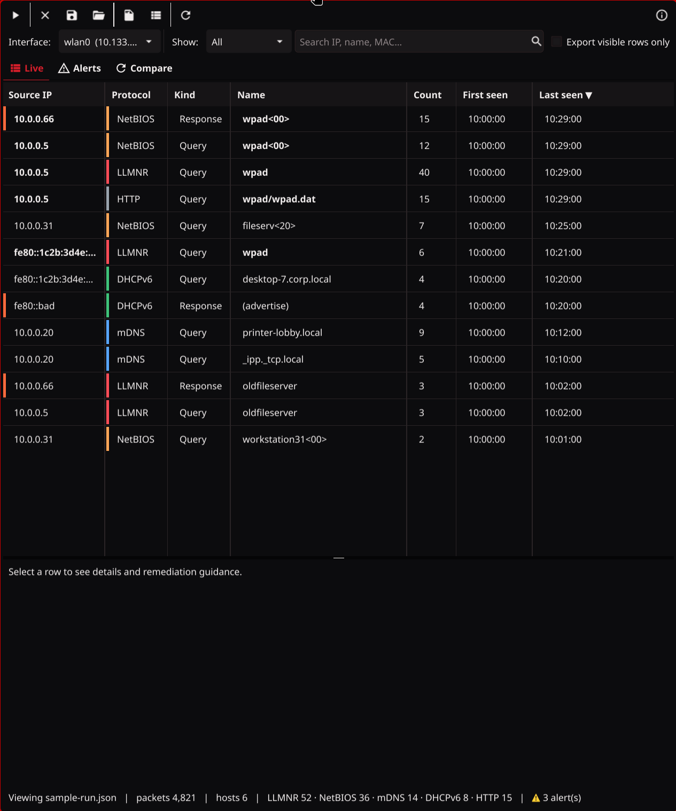
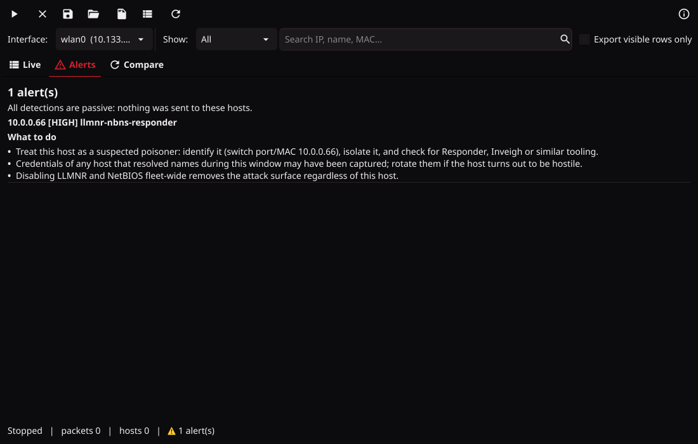
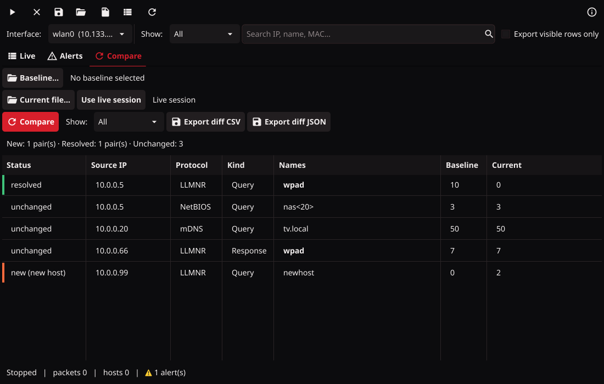

Heimdall Listener¶
Heimdall Listener is a passive network monitor for system administrators. It shows which hosts on a network segment still use the legacy name-resolution protocols and auto-discovery mechanisms that attack tools such as Responder, Inveigh, mitm6 and ntlmrelayx abuse to capture or relay credentials, so you can turn those protocols off and prove that you did.
It comes as two programs that share the same engine:
| Program | For | Capture backend |
|---|---|---|
heimdall-listener |
Workstations with a desktop: GUI, live table, compare runs | libpcap / Npcap |
heimdall-cli |
Headless servers, cloud VMs, Windows Server Core, scheduled sensors | Linux: pure Go (static binary, no libpcap needed). Windows: Npcap |
Nothing is ever transmitted. Both programs only open the interface for reading. No probes, no canary lookups, no responses.

What it detects¶
| Traffic | Why it matters | Abused by |
|---|---|---|
| LLMNR queries (udp/5355, IPv4 and IPv6) | Windows falls back to LLMNR when DNS fails; anyone on the segment can answer and harvest NTLM credentials | Responder, Inveigh, ntlmrelayx |
| NetBIOS Name Service queries and registrations (udp/137) | Same fallback as LLMNR; broadcast to the whole subnet | Responder, Inveigh |
| mDNS queries (udp/5353, IPv4 and IPv6) | Windows 10+ also falls back to mDNS; answers are trusted from any host | Responder, Inveigh |
WPAD lookups over LLMNR/NetBIOS/mDNS/DNS and HTTP wpad.dat fetches |
A poisoned proxy auto-config lets the attacker demand credentials from every browser and service on the host | Responder (WPAD), ntlmrelayx |
| DHCPv6 Solicit (udp/546→547) | Windows asks for DHCPv6 even on IPv4-only networks and accepts the first answer, which becomes its DNS server | mitm6 |
Results are aggregated per host, protocol and name with counts and first/last seen times, instead of one
row per packet. NetBIOS names are shown with their suffix, e.g. fileserver<20>.
Passive poisoner detection¶
Because the engine also decodes responses, it flags hosts that behave like an attacker, without sending a single packet:
| Alert | Trigger |
|---|---|
llmnr-nbns-responder |
A host answers LLMNR/NetBIOS for a WPAD name (high), for 3+ different names within 10 minutes (high), or for a name nobody was seen asking for (medium) |
mdns-responder |
A host answers mDNS for a WPAD name (medium) or for 5+ different names (low; Bonjour reflectors do this legitimately) |
dhcpv6-server |
Any host sends DHCPv6 Advertise/Reply and is not listed with --trusted-dhcpv6 (high: the mitm6 signature) |
wpad-http-server |
A host serves wpad.dat (info), escalated to high when the same host also answered name lookups |
Visibility caveat: LLMNR, NetBIOS and DHCPv6 responses are unicast to the victim. On a switched network the sensor only sees responses to its own lookups unless it listens on a mirror/SPAN port or an unswitched segment. mDNS responses are multicast and always visible.
Installation¶
Download the binaries from the releases page:
| File | Notes |
|---|---|
heimdall-listener-windows-amd64.exe |
GUI. Requires Npcap (also installed by Wireshark). Run as Administrator. |
heimdall-listener-linux-amd64 |
GUI. Requires libpcap (apt install libpcap0.8 or equivalent). Grant it capture rights with setcap (below) and run it as your normal user; do not sudo a desktop app, it loses access to your display. |
heimdall-cli-linux-amd64, heimdall-cli-linux-arm64 |
Headless. Static binary, nothing to install. Run with sudo or grant it CAP_NET_RAW. |
heimdall-cli-windows-amd64.exe |
Headless. Requires Npcap. Run from an elevated prompt. |
SHA256SUMS |
Checksums for all of the above. |
No prebuilt macOS binaries are provided. Both programs build and run on macOS with the go install commands
below (libpcap ships with the OS); run them with sudo, or install Wireshark's ChmodBPF to capture as your user.
Or build from source with Go 1.25+ (libpcap-dev is needed only for the GUI):
go install github.com/ZerkerEOD/heimdall-listener/cmd/heimdall-cli@latest # headless, pure Go on Linux
go install github.com/ZerkerEOD/heimdall-listener/cmd/heimdall-listener@latest # GUI, needs libpcap-dev and cgo
Capturing needs elevated privileges on every platform. On Linux grant them to the binaries once instead of
using sudo (required for the GUI, since a desktop app started with sudo cannot reach your Wayland/X
session; convenient for the CLI). Repeat after replacing a binary:
sudo setcap cap_net_raw,cap_net_admin+eip /usr/local/bin/heimdall-listener
sudo setcap cap_net_raw,cap_net_admin+eip /usr/local/bin/heimdall-cli
Viewing a saved run in the GUI needs no privileges at all (heimdall-listener run.json).
Documentation¶
- GUI tour: every toolbar icon, control, tab and column explained.
- CLI reference: all commands, flags, output formats and exit codes.
heimdall-cli <command> --helpprints the same information on the command line, andheimdall-cli completion bash|zsh|fish|powershellgenerates shell completion.
Using the GUI¶
- Pick the interface in the top-left selector and press ▶. Let it run for a while: hosts only show up when they broadcast, so a quiet network needs time.
- The table updates live. Click a column header to sort, use Show to filter by protocol, WPAD or Alerts, and the search box to filter by IP, name or MAC. Click a row for details and the exact Group Policy / registry / firewall steps to turn that protocol off on that host.
- Press ■ to stop. ✕ clears the results (it asks first if they are unsaved).
- Save run writes a JSON run file. Export writes a CSV of the rows or a per-host remediation report (text). Tick Export visible rows only to export just what the current filter shows.
- Open run loads a saved file (or start the program with the file as an argument).
Alerts are hard to miss: the Alerts tab shows a count badge (red icon when something is HIGH), a red banner appears above the tabs with the newest high/medium alert and a Show alerts button, the affected host's rows get a red marker, and your desktop gets a notification the first time each alert is raised. The Alerts tab itself lists every detection with evidence and what to do about it.

Comparing runs¶
Save a run before you change anything, remediate, capture again, then open the Compare tab: pick the baseline file and compare it against the live session or a second file. Pairs of (host, protocol) that disappeared are resolved; new pairs and new hosts are highlighted; unchanged pairs show which names were added (+) or went away (-). The diff can be exported as CSV or JSON for a change ticket.

Using the CLI (headless servers)¶
heimdall-cli interfaces list capturable interfaces
heimdall-cli capture -i eth0 live table until Ctrl-C, then a remediation summary
heimdall-cli capture -i eth0 -d 1h -o baseline.json --csv baseline.csv --summary baseline.txt
heimdall-cli capture -i eth0 --jsonl --quiet one JSON line per event (for logs / SIEM)
heimdall-cli diff baseline.json after.json what appeared, what was resolved, what persists
heimdall-cli export after.json --format summary render a saved run (csv | summary | summary-csv | json)
heimdall-cli version version and capture backend
Alerts show up in a red block at the top of the live view as soon as they are raised, and are repeated on
stderr after the capture ends (even with --quiet). capture exits with status 3 when a HIGH alert was
raised, 2 when capture privileges are missing, so scripts can react. Use --no-color (or NO_COLOR) for
plain output.
Full flag tables, output formats and exit codes are in docs/CLI.md.
capture accepts -i more than once to listen on several interfaces at the same time. On Windows the
interface can be given by its friendly name (-i "Ethernet 2"). When stdout is not a terminal the live table
is replaced by a status line every minute (--status-every). Exit code 2 means the process lacks capture
privileges; the message tells you how to fix it on that OS.
A typical remediation loop:
sudo heimdall-cli capture -i eth0 -d 30m -o before.json --summary before.txt
# ... disable LLMNR / NetBIOS via GPO, fix the wpad DNS record ...
sudo heimdall-cli capture -i eth0 -d 30m -o after.json
heimdall-cli diff before.json after.json
Run files are plain JSON (schema_version 1) and can be opened in the GUI on your workstation.
Running as a service¶
heimdall-cli service run keeps capturing and writes run-<UTC stamp>.json snapshots plus a latest.json
into the output directory at a fixed interval (default every 5 minutes, keeping the last 48). Add
--rollover 24h to start a fresh aggregation every day instead of accumulating forever.
Linux (systemd):
sudo heimdall-cli service install -i eth0 --snapshot-interval 15m
sudo systemctl daemon-reload && sudo systemctl enable --now heimdall-listener
ls /var/lib/heimdall-listener/
The unit runs as a dynamic, unprivileged user with only CAP_NET_RAW and CAP_NET_ADMIN, writes under
/var/lib/heimdall-listener (its StateDirectory), and is sandboxed with ProtectSystem=strict. If you
pass a different --out-dir, keep it under that state directory or relax the unit.
Windows (elevated prompt, Npcap installed):
heimdall-cli.exe service install -i "Ethernet0" --snapshot-interval 15m
sc start heimdall-listener
dir %ProgramData%\HeimdallListener
The service starts automatically, depends on the Npcap driver, logs start/stop events to the Windows Event
Log and to heimdall.log in the output directory, and restarts on failure.
heimdall-cli service uninstall removes the registration; snapshots are kept.
Self-test¶
scripts/gen-test-traffic.py is a small test harness (not part of the listener) that transmits the
lookups the tool is meant to catch, so you can verify a sensor on your own segment in a minute:
heimdall-cli capture -i eth0 -d 30s -o test.json # terminal 1: start listening first
python3 scripts/gen-test-traffic.py eth0 full # terminal 2, while the capture runs
heimdall-cli export test.json # LLMNR, NetBIOS, mDNS and DHCPv6 rows from this host
python3 scripts/gen-test-traffic.py eth0 responder # during a second capture: raises llmnr-nbns-responder
full must run while a capture is already listening. responder makes this machine look like a
poisoner, so the alert names this machine's own IP, not the gateway it answered to.
Cloud and virtual networks¶
Azure VNets and AWS VPCs do not forward broadcast or multicast traffic. A sensor on a cloud VM therefore only sees the VM's own LLMNR/NetBIOS/mDNS/DHCPv6 requests and its unicast DNS/WPAD lookups. That is still useful for proving that a server image is clean and that proxy auto-detection is off, but it will not show you what other VMs in the subnet are doing. On-premises, VLANs and hypervisor virtual switches behave like normal segments.
If mDNS is repeated across VLANs for IoT devices, the source IP you see is the gateway or firewall doing the repeating. There is no way to recover the original host from the repeated packet; capture on the original VLAN instead.
Limitations¶
- Capture is passive and limited to the broadcast domain of the interface (or what a SPAN port mirrors).
- HTTP
wpad.datdetection inspects the first segment of plain HTTP on tcp/80 only. - The pure-Go Linux backend does not follow IPv6 extension headers and only supports the default filter;
pass
--filteronly with the libpcap-based binaries. - Alert thresholds are deliberately conservative and are labelled as suspected; verify before acting.
Building¶
make test # unit tests (race detector)
make cli-linux-amd64 # static CLI
make cli-windows-amd64 # CLI for Windows (pure Go)
make gui-linux # GUI for Linux (needs libpcap-dev, libgl1-mesa-dev, xorg-dev)
make gui-windows # GUI for Windows, cross-compiled (needs gcc-mingw-w64 and `make tools`)
make dist # everything plus SHA256SUMS in dist/
CI runs vet, tests and all builds on every push; tagged v* releases are built and published by GitHub
Actions.
Disclaimer¶
This software is provided "as is" without any warranty of any kind. It identifies traffic patterns that usually indicate a weakness or an attack; it can miss traffic and it can flag legitimate devices. Verify findings before acting on them. Use at your own risk.
Bug reports, feature requests and support¶
Issues and pull requests are welcome; this is a side project worked on as time allows. If it helped you
disable a legacy protocol before a pentest or red team found it, you can support the work on
Patreon. Supporters at the Foothold tier and above get priority
triage on issues they open here, applied automatically by the supporter label.